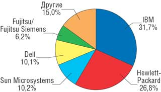
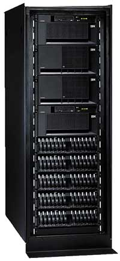
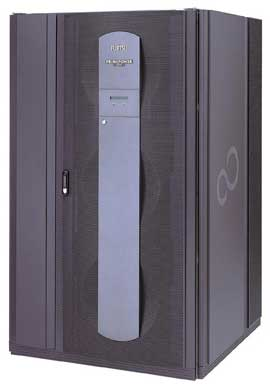
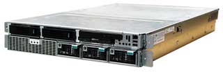
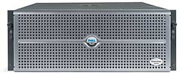
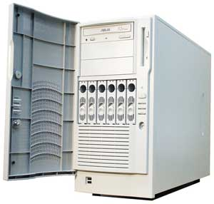
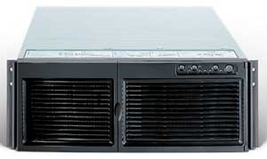

Владимир Смирнов
Неоправданно большие затраты на обновление компьютерного парка при решении "проблемы 2000", фиаско искусственно раздутой идеи Интернет-коммерции, а также застой в экономиках развитых стран негативно отразились на развитии рынка ИТ и прежде всего на сегменте серверов как наиболее технологически сложном и дорогостоящем. Однако, как отметили аналитики Dataquest и IDC, уже в конце 2002 г. рынок серверов вновь начал расти. И этот рост, как всегда происходит после очередного спада активности, сопровождался новыми требованиями со стороны заказчиков и выявил новые тенденции в области проектирования серверов, меняющие структуру данного сегмента рынка.
Рынок потребовал новых решений
Несмотря на то что бизнес требует постоянного увеличения ресурсов центров обработки данных (ЦОД), заказчики стремятся максимально сокращать инвестиции и текущие затраты на обслуживание информационных систем (ИС). Сегодня для них неприемлем традиционный путь наращивания ресурсов за счет простого увеличения числа серверов и систем хранения данных, расширения сетей - ведь с ростом числа компонентов растут сложность и объем работ по их обслуживанию и соответственно численность персонала ЦОД, увеличиваются объемы неиспользуемых ресурсов, и в конечном счете неадекватно возрастают издержки.
Новые требования заказчиков адресованы в первую очередь производителям серверов - основы всего комплекса обработки информации. Клиентам необходимо, чтобы установленные у них серверы обеспечивали:
- более высокую скорость обработки данных при снижении затрат на обслуживание, что позволило бы повысить эффективность ИС;
- простоту управления ими для быстрого изменения и перераспределения ресурсов в зависимости от потребностей заказчика;
- высокую надежность и непрерывность обработки и доступа к информации, что сократит время простоев;
- интеграцию их в существующую инфраструктуру и совместную работу с появляющимися системами обработки данных.
Новые требования привели к появлению нескольких направлений развития серверных технологий, позволяющих удовлетворить запросы заказчиков. Во-первых, это создание систем с высоким уровнем масштабирования, причем разрабатывались возможности как вертикального масштабирования (наращивания ресурсов отдельно взятой серверной системы за счет увеличения числа установленных в ней компонентов - процессоров, модулей памяти, жестких дисков, сетевых адаптеров), так и горизонтального (увеличения ресурсов серверной системы путем добавления в нее дополнительных серверных блоков и модулей).
Второе направление связано с созданием систем, способных реализовать динамическое перераспределение ресурсов для обработки возникающих потоков данных, что повышает эффективность использования ресурсов серверов, не требуя дополнительных серверных мощностей. Еще одна тенденция - консолидация серверных ресурсов в рамках ЦОД за счет внедрения серверов высокой производительности, которые позволяют работать с различными приложениями в различных операционных средах.
И наконец, разработка унифицированных промышленных стандартов и основанных на них серверных технологий обеспечивает совместимость новых серверов с уже имеющимися у заказчиков программно-аппаратными средствами и сервисами и упрощает их интеграцию в инфраструктуру.
Кто оказался впереди
Как показал анализ рынка, компания IBM (http://www.ibm.com), выйдя в 2003 г. на первое место на мировом рынке серверов, продолжает удерживать на нем лидирующие позиции. Только в период 2003-2004 гг. объем ее доходов от продаж серверных продуктов возрос почти на 12%, а доля компании на рынке серверов, по данным IDC, в III кв. прошлого года составила 31,7% (структура рынка показана на рисунке). Аналитики IDC также отмечают, что в сегменте Unix-серверов IBM удалось увеличить свою долю на 4%, причем рост ее прибыли за год составил 12%. Немалым оказался и рост прибыли компании от продаж серверов на платформе x86 (17%), а ее доля в этом сегменте возросла на 1,2%. Нельзя не отметить, что IBM, активно продвигающая серверные технологии на платформе Linux, в этом секторе увеличила объем продаж своих систем еще больше - на 54%, потеснив HP и Dell.
Лидером по объему поставок серверов (продажи в штучном выражении) стала Hewlett-Packard (http://www.hp.com), хотя по объему доходов компания находится на втором месте и ее доля на рынке составляет 26,8%. Только в III кв. 2004 г. НР сумела продать на 4,6% больше серверных систем, чем за аналогичный период 2003 г.
Два других известных производителя серверов, Sun Microsystems (http://www.sun.com) и Dell (http://www.dell.com), практически разделили третье и четвертое места - их доли на рынке составляют 10,2% и 10,1% соответственно. Но продажи Dell растут более высокими темпами (более чем на 14% за год), в то время как обороты Sun увеличились всего на 0,1%. Отметим, впрочем, что Sun удалось вернуть себе лидерство в сегменте Unix-серверов.
|  |
| Доли ведущих производителей на мировом рынке серверов. Источник: IDC, данные за III кв. 2004 г.
|
В прошедшем году аналитики IDC отметили новую тенденцию - рост продаж дорогих (стоимостью более 500 тыс. долл.) и дешевых (менее 25 тыс. долл.) серверов при том, что востребованность систем среднего уровня у заказчиков упала. Это объясняется не только активизацией клиентов из сектора среднего и малого бизнеса, которые по большей части приобретают недорогие серверы, но и появлением в дешевых системах технологических новаций, позволяющих переносить на них приложения, ранее работавшие на серверах среднего уровня.
В сегменте дорогих устройств по-прежнему преобладают мощные RISC-системы, и именно в таких серверах производители стремятся наиболее полно реализовать новые технологии, отвечающие современным требованиям заказчиков. Поэтому обсуждение новых серверных решений мы начнем с RISC-систем.
RISC во множестве обличий
Термин RISC (Reduced Instruction Set Computer) появился в конце 80-х годов, когда ряд производителей начали разработку собственных процессоров и производство серверных систем на их базе. В архитектуру RISC-процессоров, как следует из их названия, закладывалось ограниченное количество исполняемых команд, что позволяло упростить адресацию и структуру команд: все они имели одинаковую длину и единый формат. Зато существенно повышалась эффективность обработки данных за счет того, что в процессоре имелось большое количество регистров общего назначения, которые могли использоваться любой командой, а выполнение команд занимало один такт. И до последнего времени такая архитектура позволяет RISC-системам значительно опережать по производительности конкурирующие системы на базе универсальных CISC-процессоров (Сomplex Instruction Set Computing) со сложной структурой команд. Немалое значение имеет и то, что практически все RISC-процессоры проектировались как 64-разрядные, в отличие от CISC-процессоров, представленных на рынке процессорами архитектуры х86.
К моменту появления первых серверов на базе RISC-процессоров оптимальной операционной системой, позволявшей создать мощную платформу для обработки данных, была ОС Unix. Однако особенности архитектуры процессоров конкретных производителей заставили последних разрабатывать собственные версии Unix - AIX у IBM, HP-UX у Hewlett-Packard, Solaris у Sun. Как следствие, прикладное ПО, используемое заказчиками, также разрабатывалось и тестировалось для конкретных "фирменных" программно-аппаратных серверных платформ, что ограничивало их совместимость и интеграцию в рамках ЦОД.
В последнее время, как отмечалось выше, компании IBM удалось расширить поставки Unix-систем. И достигла она этого благодаря совершенствованию архитектуры своих RISC-процессоров семейства POWER, в которое входит три серии процессоров: PowerPC, POWER4 и POWER5 (на основе этих процессоров создаются системы IBM eServer pSeries). Стоит отметить, что IBM первой выпустила двухъядерные варианты процессоров POWER4, существенно увеличившие мощность серверов на их базе.
Выдвинув тезис "От простого наращивания процессорной мощности к более эффективному использованию вычислительных ресурсов", IBM разработала и внедрила в последних версиях своих процессоров ряд технологий, которые позволили решить задачи создания высокомасштабируемых серверов с возможностью виртуализации их ресурсов и консолидации в рамках ЦОД, что снижает совокупную стоимость владения системами и обеспечивает существенную экономию средств заказчиков.
Как показывает статистика, средний уровень использования вычислительных ресурсов наиболее высок у мэйнфреймов (он составляет 70-80%), в то время как уровень утилизации ресурсов Unix-сервера значительно ниже - от 10 до 15%. Поэтому в своих новых системах на базе процессоров POWER4+ и POWER5 IBM аппаратно реализовала технологии, которые ранее применялись в ее мэйнфреймах, - выделение логических разделов (Logical Partitioning, LPAR) и динамическое распределение ресурсов. В отдельном LPAR создается изолированная от других разделов среда, в которой может идти независимая обработка данных конкретных приложений. Фактически технологии выделения LPAR и их распределения реализуют принцип виртуализации, когда система создает виртуальные вычислительные ресурсы и распределяет их между потоками поступающих на сервер заданий. В результате сервер работает как несколько "виртуальных" вычислительных систем, что повышает эффективность использования его мощности.
|  | Система IBM eServer pSeries 660.
|
Если в системах IBM eServer серии pSeries 6хх (на базе POWER4+) выделение LPAR выполнялось на уровне отдельных физических процессоров (в четырехпроцессорном сервере могло одновременно существовать четыре LPAR), то в процессоре POWER5 производителю удалось усовершенствовать технологию виртуализации за счет организации микроразделов (micropartitioning). В системах eServer р5 в каждый момент времени отдельному разделу выделяется определенное количество процессорных циклов, формирующих виртуальные процессоры, создаваемые на доступных физических процессорах. На каждом физическом процессоре такого сервера может существовать до 10 LPAR (так, в четырехпроцессорном сервере eServer p5-550 можно создать до 40 LPAR). Кроме того, в процессорах POWER5 реализована технология многопоточности (Simultaneous Multi-Threading, SMT), в соответствии с которой каждый виртуальный процессор может одновременно обрабатывать два потока команд. Создаваемые для обработки данных вычислительные ресурсы таких серверов могут динамически перераспределяться в зависимости от потребностей приложений, что максимизирует степень использования мощностей сервера и обеспечивает гибкое вертикальное масштабирование системы.
Технологии виртуализации позволили IBM предложить клиентам ряд дополнительных возможностей для быстрого масштабирования ресурсов серверов eServer. Среди предложенных программ - изменение производительности систем путем автоматического подключения/отключения неактивных ресурсов (On/Off Capacity on Demand), быстрая активизация установленных процессоров и памяти (Reserve Capacity on Demand), мгновенное увеличение мощности в периоды пиковых нагрузок (Capacity Backup). При этом производитель гарантирует заказчикам, что они должны будут оплачивать только используемые мощности сервера, что, естественно, было с удовлетворением встречено рынком и позволило IBM увеличить продажи своих Unix-систем.
Другим крупным производителем Unix-систем стала Sun Microsystems, разработавшая в конце 80-х годов свою версию ОС Solaris и семейство 64-разрядных процессоров SPARC (в середине 90-х годов их сменили более мощные процессоры UltraSPARC). В настоящее время компания выпускает широкий спектр серверов, начиная от однопроцессорных и кончая мощной системой Sun Fire 15K, в которую можно установить до 106 процессоров. Производитель подчеркивает высокую степень готовности серверов на платформе UltraSPARC/Solaris - по данным проведенных тестов, такие системы позволяют достичь степени готовности 99,999% и обеспечить 98%-ное использование ресурсов в режиме непрерывной эксплуатации - 24x7x365.
Ориентируясь на создание высокопроизводительных серверов, Sun в начале 2004 г. выпустила новый двухъядерный процессор UltraSPARC IV, который, как утверждает производитель, вдвое производительнее процессоров предыдущего поколения UltraSPARC III, а также ряд серверов масштаба предприятий - Sun Fire E25K и E20K - и серверов среднего класса - Sun Fire E2900, E4900 и E6900. Следуя за IBM, Sun распространила на эти серверы программу "Ресурсы по требованию" (Capacity on Demand), позволяющую заказчикам сразу приобретать серверы с избыточным объемом ресурсов и подключать их по мере появления новых потребностей. А осенью компания объявила о выпуске четырех- и восьмипроцессорных серверов Sun Fire V490 and V890, в которых используются процессоры UltraSPARC IV.
В 2005 г. Sun планирует повысить производительность серверов, реализовав во всех процессорах семейства UltraSPARC IV технологию многопоточности (multithreading), а также введя в свою ОС Solaris 10 технологию программного выделения разделов (partitioning) Solaris Containers. В 2006 г. компания намерена выпустить на рынок восьмиядерный процессор Niagara, в котором будут интегрированы контроллеры памяти и Ethernet, что в совокупности с реализацией многопоточности в ядрах UltraSPARC позволит в несколько раз повысить производительность будущих серверов Sun.
В середине 2004 г. Sun Microsystems заключила 20-летнее соглашение с еще одним крупным производителем Unix-систем - Fujitsu Ltd., по условиям которого обе компании будут совместно разрабатывать процессоры SPARC и ОС Solaris. Согласно плану сотрудничества, первые продукты совместной деятельности появятся уже в 2006 г., а затем будет создано единое семейство серверов Advanced Product Line (APL), которое заменит существующие семейства систем Sun Fire и Fujitsu PrimePower на базе процессоров UltraSPARC, сохранив при этом полную совместимость с ними.
Японская корпорация Fujitsu (http://www.fujitsu.com) стала одним из активных участников открытого Sun в 1989 г. консорциума разработчиков архитектуры SPARC International и начала выпуск собственных версий процессоров SPARC64 и серверов семейства PrimePower на их базе. Разработчики Fujitsu сумели реализовать в SPARC64 ряд уникальных технологий. Отталкиваясь от концепции RAS (Reliability, Availability and Serviceability), они включили в архитектуру процессора систему контроля, которая аппаратно выявляет возникающие в процессе обработки данных ошибки и устраняет их путем повторного выполнения команд, что обеспечивает высокий уровень надежности и бесперебойную работу серверов PrimePower. Сегодня Fujitsu выпускает широкую гамму серверов этого семейства, от двухпроцессорных PrimePower 250 и до 128-процессорного сервера масштаба предприятия PrimePower 2500 с максимальной вертикальной масштабируемостью, ориентированного на решение задачи консолидации ресурсов ЦОД. В Европе и России серверы PrimePower поставляются компанией Fujitsu Siemens Computers.
|  | Сервер Fujitsu Siemens PrimePower 2500.
|
Компания Hewlett-Packard также входит в число ведущих разработчиков Unix-серверов со своим семейством HP 9000, для создания которого она разработала семейство RISC-процессоров HP PA-RISC и собственную ОС HP-UX. В это семейство входит полный ряд моделей, начиная с однопроцессорной HP 9000 rx2310-2 и заканчивая 128-процессорным сервером HP 9000 Superdome. Почти за два десятилетия для платформы PA-RISC/HP-UX было создано более 16 тыс. прикладных систем и широкий спектр сертифицированных решений, что обеспечило НР большую базу инсталлированных у заказчиков серверов HP 9000. В 2004 г. Hewlett-Packard начала производство двухъядерных процессоров HP PA-8800, благодаря чему клиенты получили возможность удваивать число процессоров и производительность серверов в системах HP 9000 путем простой замены процессоров.
После слияния с Compaq в портфеле предложений Hewlett-Packard появилось еще два семейства RISC-систем - серверы HP AlphaServer на базе процессоров Alpha, работающие в среде ОС OpenVMS, Tru64 Unix и Linux, и системы HP NonStop (Himalaya), демонстрирующие одни из самых высоких показателей доступности и надежности, которые достигаются за счет многократного резервирования компонентов и возможности их горячей замены.
Системы AlphaServer благодаря заложенным в процессоры Alpha технологиям аппаратной реализации разделов LPAR, в каждом из которых могут одновременно выполняться различные приложения в среде разных ОС, обеспечивают высокую эффективность использования вычислительных ресурсов. Кроме того, в последней версии процессоров Alpha EV7 реализованы такие новшества, как интеграция на кристалле функций коммутатора и набора микросхем базовой логики, что повысило производительность систем на их основе. AlphaServer создавались как модульные системы, позволяющие заказчикам последовательно наращивать их ресурсы, и потому отличаются высокой степенью масштабируемости.
Однако корпорация прекратила дальнейшее проектирование новых моделей процессоров Alpha и серверов AlphaServer, равно как и систем HP PA-RISC, считая более перспективными системы на базе процессоров Itanium, разработку которых Hewlett-Packard начала совместно с Intel в 1994 г. Более того, в начале 2005 г. НР передала всех своих инженеров, занятых разработкой процессоров, в штат Intel, где они продолжат проектирование новых моделей Itanium.
Itanium как будущая альтернатива RISC
НР и Intel (http://www.intel.com) решили объединить свои усилия, используя опыт первой в области высокопроизводительных компьютерных систем и имеющиеся у второй возможности разработки и массового производства доступных процессоров. Уже в 1997 г. компании объявили о завершении разработки технологии явного параллелизма EPIC (Explicitly Parallel Instruction Computing), которая должна быть реализована в будущих 64-разрядных процессорах Itanium (архитектура IA-64). Эта технология предполагает упаковку команд в связки с возможностью их параллельного исполнения, а поиск зависимостей между командами выполняется не процессором, а компилятором. Кроме того, в процессе формирования связок команд используются функции предсказания (Predication), позволяющие параллельно исполнять команды из разных ветвей условного ветвления, и загрузки по предположению (Speculation), подразумевающей, что данные из медленной основной памяти загружаются заранее.
В 1999 г. HP разработала версию ОС HP-UX для прототипа Itanium, первые образцы которого появились весной 2001 г. Тогда же НР выпустила первые модели серверов на базе Itanium. В середине 2003 г. состоялся выпуск процессора Itanium 2 (Madison), а НР объявила о создании нового семейства серверов Integrity на базе процессоров Itanium 2. Компания считает, что архитектура IA-64 по сравнению с другими обладает такими преимуществами, как открытость стандарта, совместимость с кодами PA-RISC и процессорами Intel х86, возможность ее использования в качестве платформы для ОС HP-UX, Microsoft Windows и Linux.
В январе 2005 г. НР анонсировала завершение перевода Open VMS, одной из основных ОС для серверов AlphaServer, на платформу Itanium 2, что, по ее мнению, будет стимулировать заказчиков, использующих системы AlphaServer, к миграции на новые серверы семейства Integrity. Кроме того, НР намерена в 2005 г. реализовать в серверах Integrity на базе процессоров Itanium технологии аппаратного nPar и программного vPar выделения разделов (partitioning), что, по ее мнению, позволит резко повысить уровень использования ресурсов этих серверов и превзойти по производительности серверы IBM eServer на базе процессоров POWER4 и POWER5.
Однако, как отмечают аналитики, прогнозы Intel о быстром распространении серверов архитектуры IA-64 не оправдываются - если за два года было продано около 100 тыс. систем на базе Itanium, то в 2004 г. достигнуть желаемого удвоения продаж серверов на базе Itanium 2 не удалось. При этом НР придется преодолевать сомнения заказчиков, обладающих большой инсталлированной базой систем AlphaServer или HP 9000 PA-RISC, в необходимости замены их серверами на базе Itanium.
В отличие от НР, IBM и Fujitsu Siemens Computers, которые также начали выпуск серверов на базе Itanium 2, не противопоставляют их собственным Unix-системам, а лишь расширяют портфель своих серверных решений на основе процессоров Intel. Так, IBM дополнила серию систем eServer xSeries двухпроцессорным xSeries 382 и четырехпроцессорным xSeries 455. Аналогично Fujitsu Siemens Computers предлагает двухпроцессорные системы RXI300 и четырехпроцессорные RXI600 в серии своих Intel-серверов Primergy.
Необходимо отметить, что и на отечественном рынке появились производители серверов, начавшие выпуск систем на базе Itanium 2. Так, компания "Аквариус" (http://www.aq.ru) выпускает две модели серверов AquaServer на этой платформе - двухпроцессорный PI201 и четырехпроцессорный PI406. Аналогичные двух- и четырехпроцессорные серверы семейства G-Scale предлагает заказчикам компания Kraftway (http://www.kraftway.ru).
|  | Двухпроцессорный Kraftway G-Scale ET20 на базе Itanium 2.
|
Кроме того, в содружестве с компанией Bull, разработавшей аппаратную платформу с чрезвычайно широкими возможностями вертикального масштабирования, Kraftway создала модель высокопроизводительной системы Kraftway G-Scale, в которой может использоваться от двух до 32 процессоров Itanium 2.
Серверная архитектура х86 стала массовой
Если системы на базе Itanium 2 продаются в относительно небольших количествах, то серверы 32-разрядной архитектуры х86, пришедшей из настольных ПК, стали самыми распространенными на рынке. Благодаря активной маркетинговой политике Intel, которая взяла на себя труд по разработке и производству серверных платформ (процессоров, наборов микросхем, системных плат), а также невысокой стоимости создаваемых на их базе систем, к началу 2000 г. многие производители, в том числе и российские, начали выпускать 32-разрядные серверы архитектуры Intel (IA-32).
В то же время требование стандартизации оказалось легче всего выполнить именно для подобных систем, поскольку на их основе клиенты могли строить свои ИС, используя в качестве вычислительной платформы широко распространенные и простые для освоения ОС - прежде всего Microsoft Windows Server 2003, Novell NetWare, различные версии Linux. Плюс к тому массовый выпуск серверных платформ для 32-разрядных процессоров Intel Xeon обеспечил высокую доступность создаваемых серверов.
Выпуская несколько модификаций процессоров Xeon, Intel обеспечила производство как "легких", одно-двухпроцессорных серверов, используемых в качестве почтовых, серверов доступа в Интернет и распределения нагрузки, так и моделей с четырьмя или восемью процессорами (на базе Xeon МР), которые производители рекомендуют применять в качестве вычислительных систем для приложений обработки баз данных на Microsoft SQL, Oracle, SAP, в составе кластеров и для консолидации ресурсов ЦОД.
Летом 2003 г. Intel отметила знаменательное событие - по данным IDC, объем продаж серверов архитектуры IA-32 впервые превзошел объемы продаж серверов на базе RISC-процессоров. По данным аналитиков, сегмент серверов на основе 32-разрядных процессоров Intel продолжает неуклонно расти, опережая продажи RISC-систем. Так, по данным IDC, только в III кв. 2004 г. объемы поставок серверов архитектуры х86 увеличились на 22,4% и достигли 1,4 млн шт., многократно превысив объем поставки RISC-серверов.
Естественно, что после слияния с Compaq Hewlett-Packard продолжила разработку и выпуск серверов семейства ProLiant, которое представлено сейчас на рынке сериями ProLiant ML (напольные, расширяемые серверы) и ProLiant DL (оптимизированные для установки в стойку). Серию серверов ProLiant ML производитель нацеливает в основном на сегмент среднего и малого бизнеса; в нее входят как модели начального уровня на базе процессоров для ПК Intel Celeron или Pentium 4, так и двух- и четырехпроцессорные серверы ProLiant ML3х0 и ProLiant ML5х0, обладающие высокой производительностью, возможностью расширения памяти, установки новых жестких дисков, сетевых адаптеров.
Структура серверов серии ProLiant DL значительно сложнее и позволяет создавать на их основе многоуровневые инфраструктурные решения с раздельной обработкой приложений на каждом уровне. В эту серию входят недорогие однопроцессорные DL320, двухпроцессорные DL14х - DL3х0, четырехпроцессорные DL5хх и восьмипроцессорные серверы DL7х0. Среди последних выделяется DL760 G2 - система на базе Xeon MP, в которой использован набор микросхем F8 собственной разработки НР с технологией RAID-памяти, что обеспечивает серверу не только высокую производительность, но и надежность и доступность данных.
Учитывая требования клиентов, касающиеся снижения стоимости обслуживания серверов, НР разработала и внедрила для всех серверов ProLiant аппаратную технологию HP Lights-Out на базе встроенных интеллектуальных процессоров, обеспечивающих мониторинг состояния каждого сервера и множество функций управления им. Для их реализации создан комплекс ПО ProLiant Essentials, основанный на технологии виртуального присутствия и управления серверами и целыми стойками серверов. В состав комплекса ProLiant Essentials входит ряд программных решений, обеспечивающих установку и настройку серверов, их мониторинг, выявление потенциальных отказов и ряд других возможностей.
К числу ведущих зарубежных производителей серверов на базе процессоров х86 аналитики относят не только Hewlett-Packard, но и Dell, IBM, Fujitsu Siemens Computers, Sun Microsystems, а в России - Kraftway и "Аквариус".
Положение Dell на рынке серверов весьма напоминает положение Compaq в конце 90-х годов - производитель не имеет процессоров собственной разработки и для выпуска серверных систем использует исключительно процессоры Intel. Однако благодаря четко отлаженной системе прямых поставок, позволяющей оптимизировать цены на выпускаемые продукты, Dell в последние годы добилась значительных успехов на рынке серверов, сумев даже, по данным аналитиков, потеснить одного из ведущих производителей серверов - Sun Microsystems. Dell поставляет достаточно широкий спектр серверов семейства PowerEdge, начиная от дешевых одно- и двухпроцессорных напольных серверов и заканчивая оптимизированными для размещения в стойки серверами с числом процессоров от 1 до 4 на базе Xeon с технологией EM64T, а также двух- и четырехпроцессорными системами на базе Itanium 2.
|  | Четырехпроцессорный сервер Dell PowerEdge серии 66х0.
|
Как подчеркивает сама Dell, для уменьшения затрат на развертывание, мониторинг и управление серверами PowerEdge заказчики могут воспользоваться разработанным ею пакетом OpenManage 4.
В обширной совокупности серверных решений, выпускаемых IBM, существует семейство серверов IBM eServer xSeries, в которое входят одно- и двухпроцессорные серверы на базе Xeon, а также четырех- и восьмипроцессорные системы на базе Xeon МР. В большинстве из них IBM использовала оригинальные аппаратные решения, которые обеспечили высокие технические и эксплуатационные показатели систем.
В частности, в рамках eServer xSeries IBM выпускает модульный сервер xSeries 445 на базе Xeon MP в корпусе форм-фактора 4U для монтажа в стойку. В нем применены разработанные компанией архитектура Enterprise X-Architecture и набор микросхем IBM XA-32 второго поколения, в котором реализованы конструктивные идеи мэйнфреймов, благодаря чему сервер можно вертикально масштабировать до уровня 16-процессорной системы путем объединения двух шасси xSeries 445 в единый блок высотой 8U. При этом масштабирование осуществляется по принципу XpandOnDemand - "оплаты по мере роста", что позволяет существенно экономить средства заказчика.
Сервер xSeries 445 стал единственной системой на основе архитектуры х86, который работает в среде ОС Microsoft Windows трех поколений: Windows NT 4 Enterprise Edition, Windows 2000 и Windows Server 2003, что упрощает клиентам процессы миграции и развертывания ПО. В нем также реализована возможность организации логических разделов на базе ПО VMware ESX Server для консолидации серверов в рамках ЦОД.
Даже в напольных серверах IBM xSeries 236 и xSeries 226 нашлось место новациям - в них наряду с резервированием жестких дисков и источниками питания с возможностью горячей замены используется новый тип памяти DDR2, объем которой может быть доведен до 16 Гбайт, а также система самодиагностики Light Path Diagnostic с информационной панелью.
Нельзя не упомянуть и о комплексе ПО IBM Director 4.20, предназначенном для установки, развертывания, удаленного мониторинга и управления серверами eServer xSeries. Наряду с этими функциями IBM Director позволяет вести учет систем в инфраструктуре ЦОД, управлять процессами, переустанавливать ОС и приложения на множестве серверов, а также выполнять ряд вспомогательных задач администрирования.
Fujitsu Siemens Computers наряду с мощными RISC-системами поставляет большую номенклатуру серверов семейства Primergy на основе архитектуры х86. Подобно IBM eServers xSeries, семейство Primergy содержит как традиционные серверы с числом процессоров от 1 до 4, так и мощные системы, не имеющие аналогов на рынке. К числу подобных систем относится модульный сервер Primergy RX800, обладающий широкими возможностями вертикального масштабирования - в него можно установить от 4 до 16 процессоров Xeon MP, которые добавляются в систему в виде четырехпроцессорных модулей.
Sun Microsystems дополнила три года назад свой ассортимент RISC-систем двумя серверами Sun Fire V на базе процессоров Intel Xeon. Чтобы обеспечить серверам архитектуры х86 совместимость с RISC-системами компании, Sun предлагает клиентам использовать в качестве рабочей среды для Sun Fire V две 32-разрядные ОС - Solaris x86 или Linux.
Крупнейшие отечественные производители серверов - это компании "Аквариус" и Kraftway. "Аквариус" в выпускаемых ею серверных системах в качестве основного "двигателя" ориентируется на процессоры Intel архитектуры х86. Серия Economy включает серверы AquaServer для малых предприятий на базе процессоров Pentium 4 и Xeon, а серия Professional - системы AquaServer на базе Xeon и Xeon MP, что позволяет компании предлагать корпоративным заказчикам достаточно широкий спектр серверных решений.
|  | Двухпроцессорный сервер AquaServer px102 на базе Intel Xeon.
|
Наряду с указанными серверами "Аквариус" разработала для телекоммуникационной отрасли самостоятельную серию серверов AquaServer Telecom на базе Pentium 4 и Xeon. Поскольку эти серверы выпускаются в стоечном исполнении, у заказчиков появляется возможность горизонтального масштабирования за счет добавления в стойку новых серверов, что увеличивает общую производительность создаваемой вычислительной системы.
Kraftway имеет обширный портфель предложений серверов на базе процессоров архитектуры х86: модели начального уровня GEG Express Lite на базе Pentium 4, специализированные двухпроцессорные серверы для Интернет-приложений GEG Express ISP и серверы масштаба предприятий GEG Express х00 с числом процессоров от 2 до 4 (обе серии на базе Xeon в стоечном исполнении).
|  | Четырехпроцессорная система Kraftway GEG Express 400 EM10.
|
Кроме этих двух ведущих производителей серверов на нашем рынке, Intel называет также компании Arbyte, Desten Computers, Helios Computer, K-Systems, NT Computer и ряд других, которые на базе ее процессоров выпускают серверы для нужд российских заказчиков.